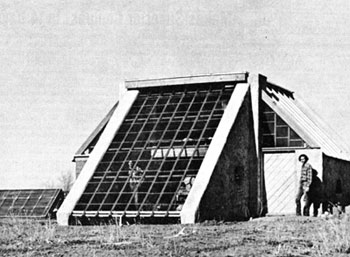

Ever so often here at MOTHER, we receive letters and snapshots from people who are really makin' things happen . . . folks who are proving to themselves and to others that life can be changed for the better.
Well, around the first of the year we got one such note from Michael Frerking of Arizona Sunworks. Mike, you may recall, wrote an article for the special "Solar Energy Section" of MOTHER NO. 34. Since then, he's been busy designing sun-heated homes that [1] are small, [2] can be built in stages by the occupants/owners themselves, and [3] don't require a 30-year mortgage to move into. A perfect example of the kind of structure Mike and Arizona Sunworks specialize in is shown in the accompanying photograph.
Here's Mike's message:
"Thought I'd drop you a photo of Arizona Sunworks' new home base. It's a passive solar-heated adobe, with greenhouse wall for collector. Two of us spent $1,500 and three toilsome months putting it together.
"If you look closely at the photo, you'll notice a pit in front of the building from which the adobe came . . . not bad, huh! All of the glass and lumber is recycled and the roof is made of metal billboards. (Can there be a better way to lay them to rest?)
"With our past summer's performance, we feel confident that we can put one family a year into a 700-square-foot home like the one shown with reasonable ease. This winter, we'll be working on a master plan of sorts to determine how our eleven acres of land will be used . . . . We're hopeful that eventually we can integrate other alternative energy systems into our projects."
We hope so too, Mike. We wish you the best of luck . . . and many imitators!
|
 |
|
|